1.登录与账户验证
码云迁移验证平台地址,http://128.196.1.143:30455,点击云桌面账户登录,用户为云桌面用户名密码
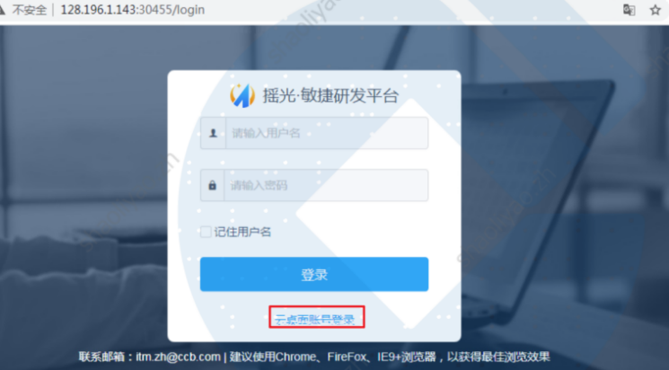
选择【代码托管】
我的应用中若无，可以到应用商店中进行启用
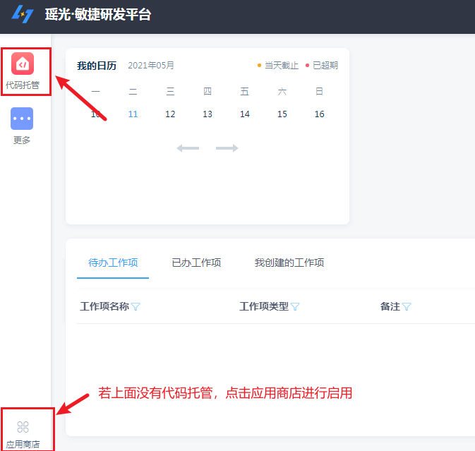
切换所属事业群:点击左侧三个横线，切换所属事业群
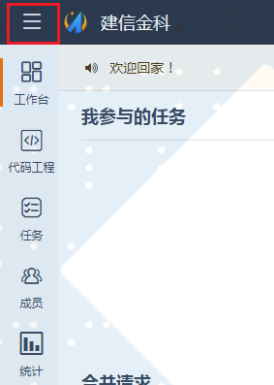
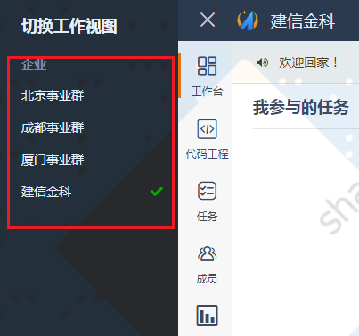
进入代码仓库:点击左侧导航栏【代码工程】根据代码仓库名称选择进入代码仓库
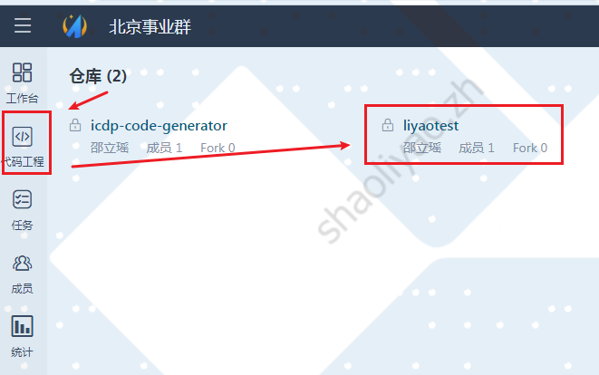
账户人员验证:
[管理]—[成员管理] 查看是否加入所有项目参与人员
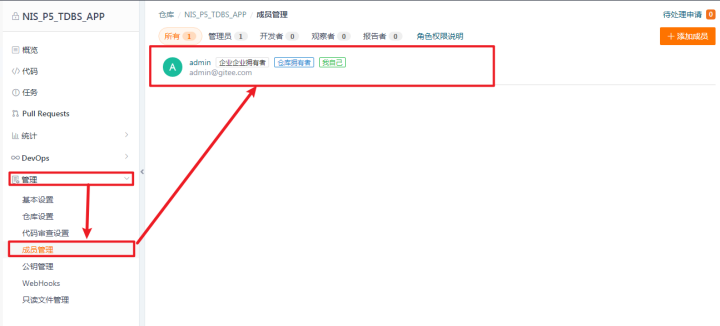
账户人员验证:
检查项目参与人员权限（管理员、开发者、观察值、报告者）
代码仓管理员—项目组填报
其他人员-开发者
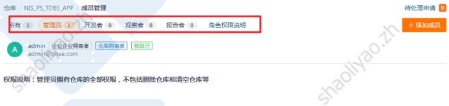
2.代码克隆验证
代码克隆有两种方式：
1、http地址克隆
这个时候克隆要输入用户名和密码
账户操作验证—拉取代码:①点击代码—克隆/下载—HTTPS—复制
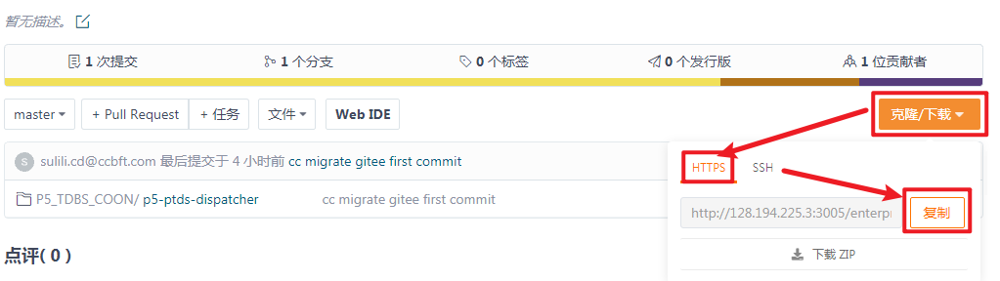
账户操作验证—拉取代码:②选择要存放代码的文件夹路径，右键，git bash here
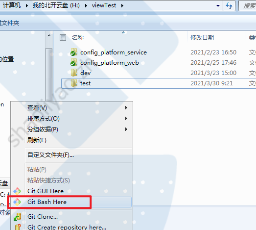
账户操作验证—拉取代码:③git clone + 复制地址

账户操作验证—拉取代码:④输入用户名和密码，验证是否成功
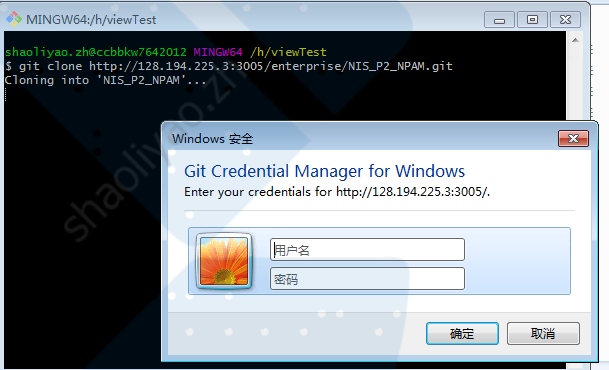
2:维护公钥，使用ssh克隆
维护公钥:①右上角鼠标悬浮在人名上，点击设置
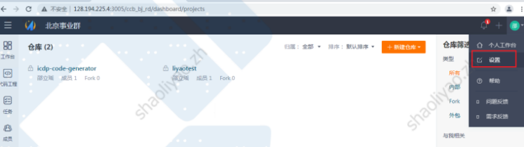
维护公钥:②点击SSH公钥，输入你的公钥点击确定
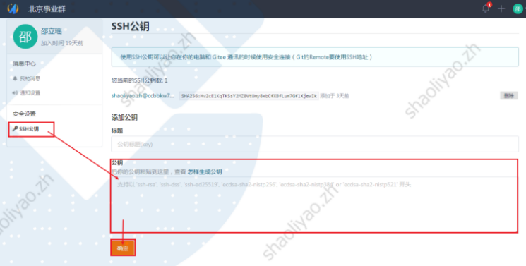
维护公钥:③若你本身无公钥，需要先生成公钥，公钥生成见图
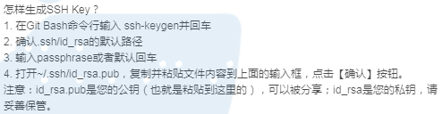
克隆代码:①点击代码—克隆/下载—SSH—复制
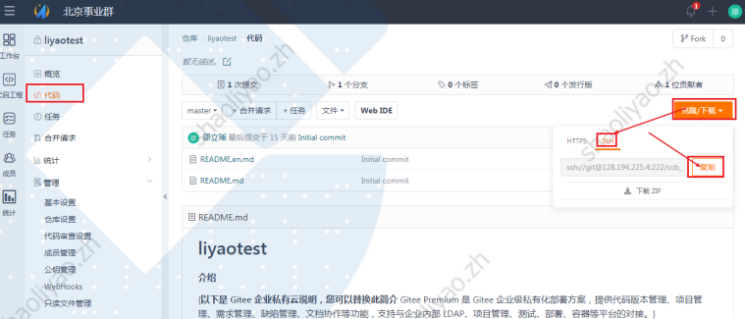
克隆代码:②选择要存放代码的文件夹路径，右键，git bash here
克隆代码:：git clone + 复制SSH地址 ，验证是否可以成功克隆
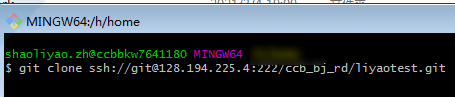
3.git能力验证（可选）
若用户之前不熟悉git操作，用户需要进行能力验证。主要是在试用环境进行一些简单的git操作，熟悉git操作。
进入试用企业:提供了建信金科企业给用户做操作试用点左上角的三个横线，进入建信金科企业
创建试用仓库: 点击新建仓库，创建自己的试用仓库
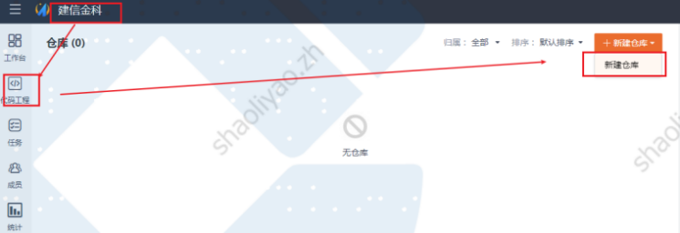
提交更改验证:①修改代码中的部分文件
在代码根目录中，git add+修改文件
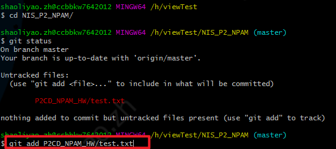
提交更改验证:②git commit -m “测试提交”
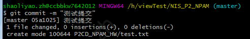
提交更改验证:③git push origin+分支名称
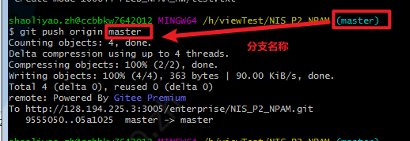
拉取代码验证:git pull
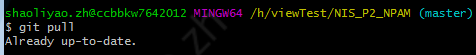
分支操作:①新增分支
[分支]—[管理]
[新建分支]—[新建]
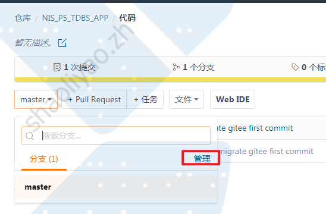
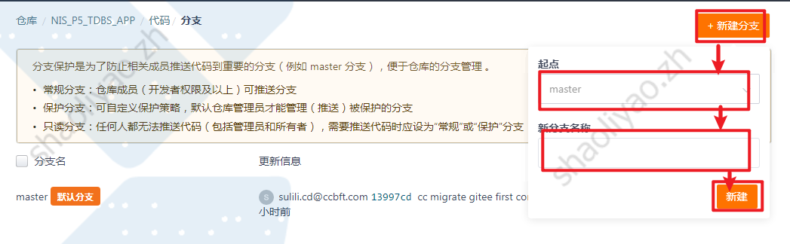
分支操作:②删除分支
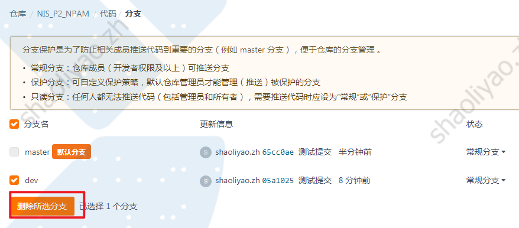
分支操作:③合并分支
代码页面选择【+Pull Request】
选择源分支与目标分支
填写合并标题与说明
选择审查人员
查看合并代码，确定是否成功
点击创建
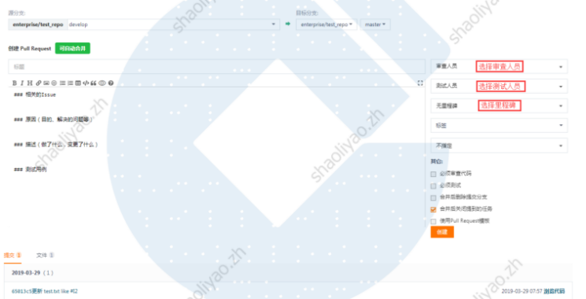
分支操作:④审查分支
Pull request中可以对所有请求进行审查
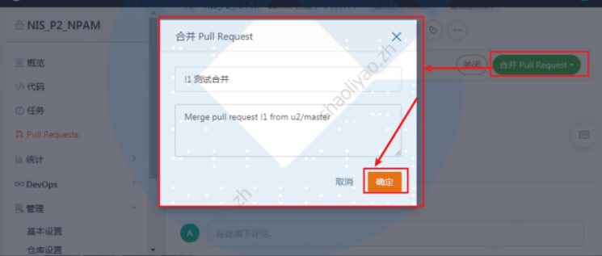